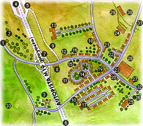

Organización Mundial del Movimiento Scout


-
Palabras Perdidas
-
Situacíones de Paz
-
El periódico de la Paz
-
Reportero de la Paz
-
Los Caminos de la Paz
- Leyendas de Paz
-
Manifiesto 2000


Difusión libre de la información
 |
El Secretario General firma el Manifiesto 2000 | |
| Foro de alternativas juveniles | |
|
|  | La autopista del Valle Verde | |
 |
Piratas del Caribe | |